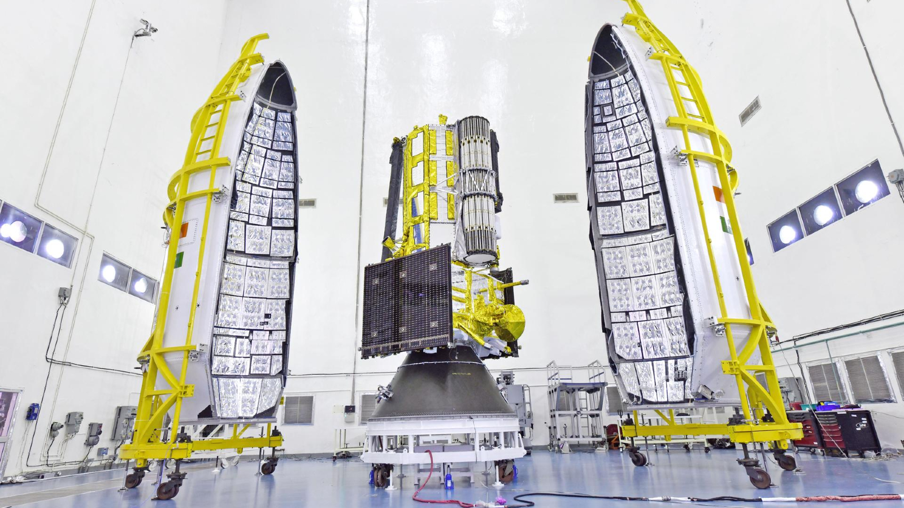

The most expensive Earth observation satellite ever built — a joint ISRO-NASA mission that maps the entire Earth's surface every 12 days with centimetre-level precision. Earthquakes, volcanoes, ice sheets, forests, and sea level rise — NISAR watches all of it, all the time.
View: NISAR Image GalleryNISAR — NASA-ISRO Synthetic Aperture Radar — is the most expensive Earth observation satellite ever built, jointly developed by NASA and ISRO at a cost of approximately $1.5 billion. Launched on July 30, 2025 aboard ISRO's GSLV Mk II from Sriharikota, it was declared fully operational in January 2026 after completing its 90-day commissioning and calibration phase. As of May 2026, NISAR is actively delivering operational data — including 100×100m resolution soil moisture maps and coastal change observations, with a March 2026 pass over the US Northwest Pacific coastline already demonstrating its global monitoring capability.
NISAR carries two SAR (Synthetic Aperture Radar) instruments — an L-band radar (NASA) and an S-band radar (ISRO) — that work together to produce the most detailed, most frequent global surface deformation maps ever made. It covers the entire Earth every 12 days, seeing through clouds and darkness, measuring surface movement to millimetre precision.
NISAR does not take photographs. It measures change. It sees the millimetre-scale deformation of ground before an earthquake. It tracks ice sheet thinning month by month. It monitors groundwater depletion across aquifers. It detects volcanic swelling before eruptions. NISAR is a planetary early warning system.
Synthetic Aperture Radar works by emitting microwave pulses toward Earth's surface and measuring the returning signal. Unlike cameras that capture reflected sunlight, SAR creates its own illumination — which means it works equally well day or night, and sees through clouds, smoke, and rain.
NISAR uses InSAR (Interferometric SAR) — comparing radar images taken at different times to measure surface movement with millimetre precision. The two passes of the same area 12 days apart can reveal that a hillside has moved 3mm — possibly indicating an impending landslide. A volcano has swelled 5mm — potentially indicating magma accumulation.
The L-band (23 cm wavelength, from NASA) penetrates vegetation to see the ground beneath forests. The S-band (10 cm wavelength, from ISRO) is optimised for agricultural monitoring and snow/ice mapping. Together, they provide complementary views no single instrument could achieve.
Both radars feed into NISAR's most striking hardware feature: a 12-metre deployable mesh reflector antenna — the largest deployable SAR antenna NASA has ever built. Folded like an umbrella for launch and deployed in orbit, this massive dish is what gives NISAR its extraordinary resolution and swath width. The price of this capability: NISAR generates approximately 80 terabytes of data every single day — more than any other Earth observation satellite in history. Processing this firehose of data is why the NASA-ISRO partnership was essential — both agencies' ground systems and computing infrastructure combined are needed to handle it.
NISAR is the deepest, most expensive collaboration between ISRO and NASA in history. NASA provided the L-band radar, the spacecraft bus, mission systems, and launch support coordination. ISRO provided the S-band radar, the GSLV Mk II launch vehicle, and ground station support from the Indian Deep Space Network at Byalalu.
The partnership is genuinely equal — not a senior-junior relationship. Both agencies contributed core science instruments. Both agencies operate receiving stations. Both agencies publish the data. NISAR data will be freely available globally — a joint Indian-American gift to Earth science.